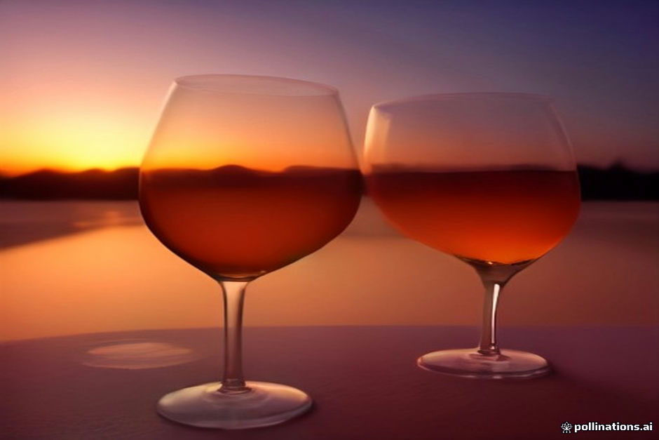

Most luxury desert camps in Erg Chebbi do not hold liquor licenses due to local regulations and the complexity of supply lines in the Sahara. While some high-end sites offer a limited selection of beer or wine at a markup, the standard practice for travelers who want a specific vintage or brand is to buy it yourself beforehand.
Planning this part of your trip requires knowing where to shop in Marrakesh, how to pack bottles securely for a bumpy nine-hour drive across the Atlas Mountains, and understanding local customs regarding public consumption. Here is how to handle your camp refreshments without unnecessary hassle.
Where to Buy Alcohol in Marrakesh
Alcohol sales in Morocco are legally restricted to licensed supermarkets, specialized wine shops, and certain hotels. If you are starting your journey from Marrakesh, the easiest places to stock up are the large Carrefour hypermarkets (such as the one in the Al Mazar mall or near the train station) or the dedicated wine shops scattered through the newer Gueliz district.
Moroccan wine—particularly reds from the Guerrouane or Meknes regions—offers decent quality at a very fair price compared to imported European labels. Beer options include local brews like Special Flag and Stork. Keep in mind that alcohol sales are strictly prohibited on Fridays and religious holidays, so buy your supplies a day or two in advance.
- Carrefour Al Mazar has a well-stocked cellar section.
- Gueliz has several independent cavistes with English-speaking staff.
- Always carry your passport or a photo of it, as some supermarkets ask for ID for alcohol purchases.
Transporting Glass and Cans Across the Atlas
The drive from Marrakesh to Merzouga involves winding mountain passes and miles of corrugated desert pistes. If you pack glass wine bottles loosely in your main suitcase, the vibration and shifting gear can easily lead to a ruined wardrobe by the time you reach your luxury camp.
Wrap individual glass bottles in thick socks or t-shirts before placing them deep in the center of your soft duffel or hard-shell case. If you prefer beer, cans are generally lighter and less prone to catastrophic breakage, though they can dent and pop open if subjected to intense heat inside a trunk over multi-day itineraries.
- Pack bottles vertically when possible, wedged between soft items.
- Avoid leaving cases of beer in direct sunlight inside a parked vehicle.
- Ask your driver to load fragile bags carefully if you are sharing a private 4x4 vehicle.
Camp Etiquette and Storage
Once you arrive at the dunes, most camp staff are happy to help keep your drinks cold. While luxury camps have solar or generator-powered refrigeration, communal kitchen fridges can get crowded. It is polite to hand your drinks to the camp manager upon arrival and politely ask if they can chill a bottle of white wine or a few beers for sunset.
Be mindful of where you drink. While luxury camps are private spaces catering to international tourists, public intoxication outside camp boundaries or in nearby Berber villages is deeply disrespectful. Enjoy your evening around the campfire or inside your private tent terrace.
- Tip the camp staff a few dirhams if they consistently keep your drinks iced.
- Do not expect ice cubes to be readily available in large quantities in the deep desert.
- Dispose of empty bottles and cans responsibly in the camp's recycling bins.
What Camps Usually Provide
It is worth checking your booking details before you load up with heavy supplies. Some high-end Erg Chebbi operators include complimentary mint tea, bottled water, and sometimes a bottle of house wine with dinner, while others operate on a strictly BYOB basis.
If you have questions about refrigeration limits or whether your specific camp has glassware available in the dining tent, consult our pre-booking guide or ask us directly before departure.
| Supermarket (Carrefour) | Local Caviste (Gueliz) | |
|---|---|---|
| Selection Variety | Wide range of local wines and beers | Curated imports and rare Moroccan vintages |
| Price Point | Standard fixed retail pricing | Slightly higher due to specialty imports |
| Friday Closures | Alcohol section closed on Fridays | Often closed on Fridays and holidays |
| Packaging Help | Standard plastic bags | Sturdy boxes and bubble wrap available |

Illustration, not a photograph — for the real thing, you'll have to stand on the ridge yourself.
Quick answers
A few follow-up questions travelers ask about this.
Can I buy alcohol in Merzouga village near the dunes?
No. There are no liquor stores or bars in Merzouga or Hassi Labied. You must purchase your supplies in Marrakesh, Fes, or Errachidia before heading into the desert.
Will camp staff chill my wine or beer for me?
Yes, most luxury camps have refrigerators and are happy to chill your drinks for sunset or dinner if you hand them over upon arrival.
Are corkage fees common at desert camps?
Generally no. Because most camps do not sell alcohol themselves, they do not charge corkage fees for guests bringing their own bottles.
Planning your own route?
Tell us your dates and what matters to you — we'll answer with a straight recommendation, not a brochure.
Send an inquiry See the itineraries